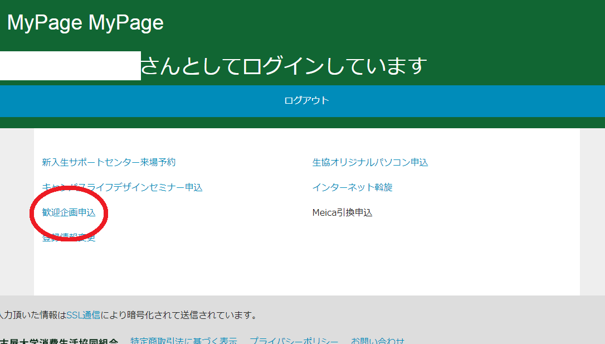
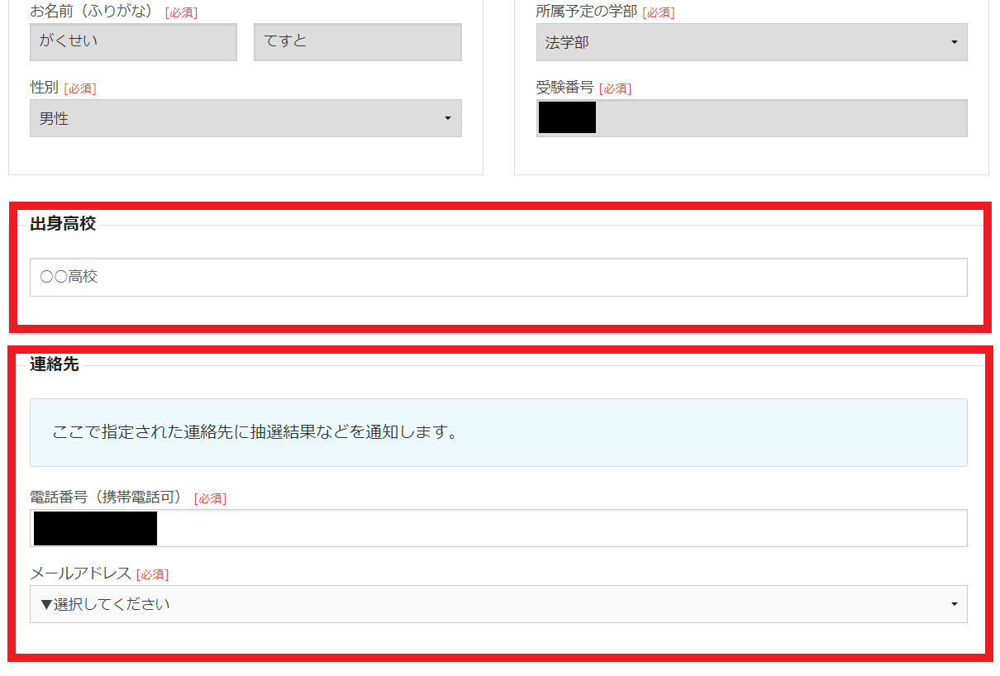
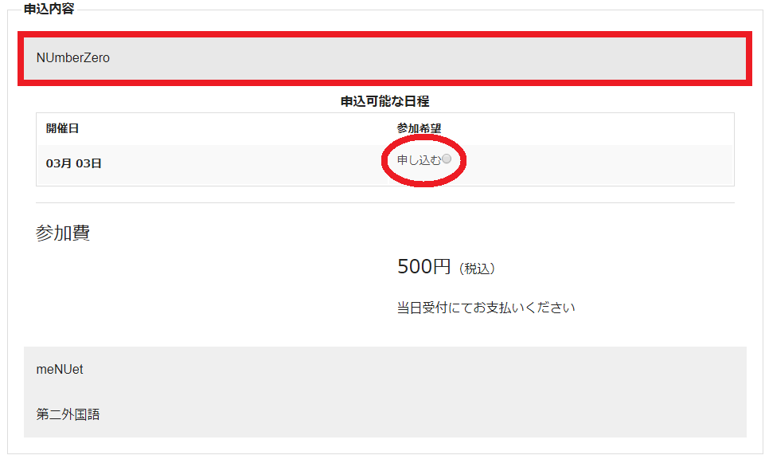
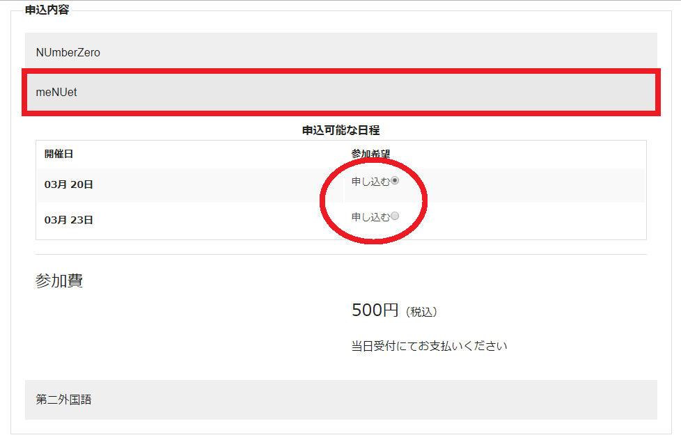
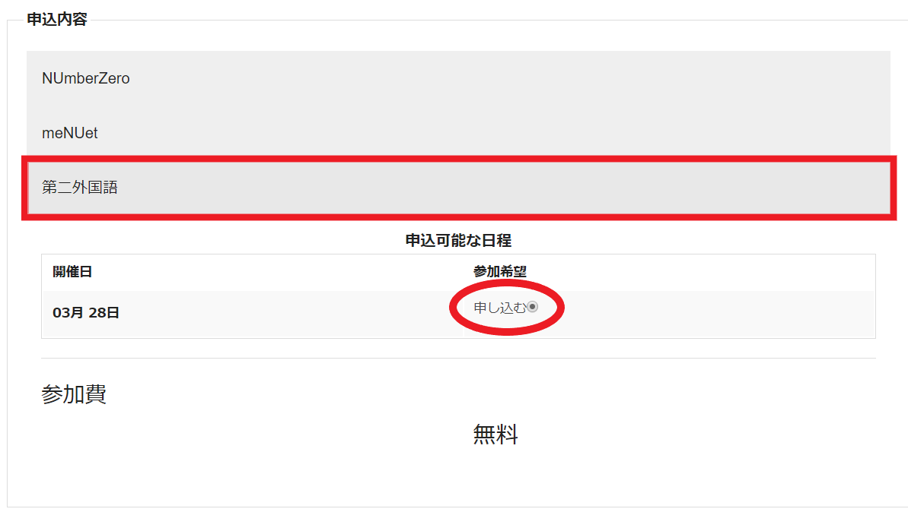
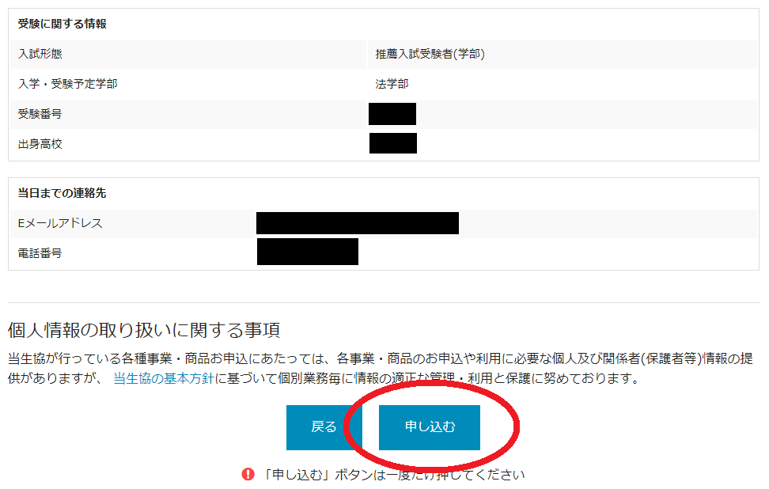

①生協マイページへのログイン
企画の申込みには、名大生協マイページへの登録が必要となります。登録済みの方はユーザー名とパスワードを入力し、マイページのTOPページへお進みください。
登録が済んでいない方は、「マイページ登録」より登録をお願いします。
②歓迎企画申込ページへ移動
ログイン後、「歓迎企画申込」をクリックしてください。

▲申込ページへの移動方法
▲申込ページへの移動方法
③出身高校と連絡先の記入
出身高校と連絡先の電話番号記入と、メールアドレスの選択をお願いします。

▲出身高校と連絡先の記入
▲出身高校と連絡先の記入
④企画の申込
A.「NUmber Zero (推薦生向け歓迎企画)」への申込
「NUmberZero」を選択し、「申し込む」にチェックをしてください。※参加費は500円です。当日受付でお支払いください。
※応募者多数の場合、抽選を行います。NUmber Zeroの当選者発表は、2/27(火)に、しんかんWeb2018での発表およびメールでご連絡します。

▲NUmber Zeroの申込
▲NUmber Zeroの申込
B.「meNUet (全新入生向け歓迎企画)」への申込
「meNUet」を選択し、参加を希望する日程に「申し込む」のチェックをしてください。※参加費は500円です。当日受付でお支払いください。
※応募者多数の場合、抽選を行います。meNUetの当選者発表は、3/18(日)に、しんかんWeb2018での発表およびメールでご連絡します。

▲meNUetの申込
▲meNUetの申込
C.「名大一受けたい第二外国語の授業」への申込
「第二外国語」を選択し、「申し込む」にチェックをしてください。※参加費無料です。

▲第二外国語の申込
▲第二外国語の申込
⑤申込み確定
入力内容に間違いがないか確認の上、「申し込む」をクリックしてください。※申込完了後、自動返信メールが登録したメールアドレスに送られます。
※自動返信メールが来ない場合、名大生協学生委員会アドレス( student-c@coop.nagoya-u.ac.jp )までご連絡ください。

▲申込み確定
▲申込み確定